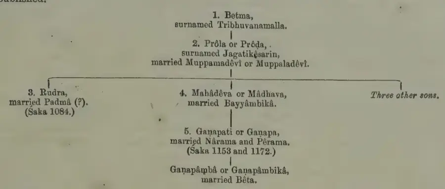

Yenamadala inscription of Gaṇapâmbâ
No. 16.— YENAMADALA INSCRIPTION OF GANAPAMBA.
An abridged English translation of this inscription, based on a copy from the collection of Colonel Colin, Mackenzie,1 was published by Mr. Gordon Mackenzie in the Manual of the Kistna District, p. 13 f. The original is engraved on four faces of a pillar in the village of Yenamadala in the Guntūr tâlukâ of the Kistna district.2 The pillar is now lying in the temple of Vênugôpâla. Before its removal to this place of comparative safety, the villagers were using it for grinding chunnam on it. This objectionable practice has led to the destruction of a considerable portion of the inscription. The first and second faces, which bear an inscription in the Telugu alphabet and the Sanskrit language, are somewhat worn, but still legible. Of the third face, however, which, as the published version of Colonel Mackenzie's copy shows, formerly contained the first half of a long passage in the Telugu alphabet and language, only the first seven lines are now visible, while the remaining lines are worn smooth, with the exception of one, two, or three letters at the beginning, and at the end, of each line. The fourth face, which contains the end of the Telugu portion, and three other Telugu inscriptions of slightly later date, is again in tolerably good preservation. The last of the Telugu inscriptions on the fourth face is continued at the bottom of the first face, which had been left blank by the engraver of the first inscription. Finally, a short Telugu inscription, which looks quite recent, but has been mistaken for a portion of the first inscription,3 is engraved at the bottom of the second face.
Besides the two later additions on their lowermost portions, the first and second faces of the pillar bear, as stated above, an inscription in the Telugu alphabet and the Sanskrit language. It consists of twenty-five verses, the first two of which are addressed to Gaṇêsa and the Boar-incarnation of Vishnu. Verse 3 refers to the race of the Kâkatiśas, or, as they are more generally called, Kâkatiṣas. As in the Gaṇapêśvaram inscription (ante, p. 82), the list of kings opens with Prôla (v. 4). His son Mâdhava (v. 5) must be identical with Mahâdêva, who was the son of Prôla and younger brother of Rudra according to the Êkâmranâtha and Gaṇapêśvaram inscriptions. This Mâdhava is stated to have lost his life in battle (v. 5). His son was Gaṇapati (v. 6) or Gaṇapa (vv. 7, 15, 23), whose daughter was Gaṇapâmbâ (vv. 8, 21) or Gaṇapâmbikâ (vv. 9, 15, 25).
Verses 10 to 14 describe a dynasty of local chiefs, who ruled over the district of Konnâtavâdî4 (v. 11) and resided at Śrî-Dhânyânkapura5 (vv. 10, 17, 21), i.e. Amarâvatî in the Sattenapalle tâlukâ of the Kistna district. These are: Kêta6 (v. 10 f.), who gave away seventy agrahâras on the southern bank of the Vernâ7 (v. 12), his son Rudra (v. 13), and the latter's son Bêta (v. 14). To this Bêta, the princess Gaṇapâmbikâ was given in marriage by her father Gaṇapa (v. 15).
1 See Mr. Sewell's Lists of Antiquities, Vol. I. p. 319 f.
2 ibid. p. 77. There is another village of the same name in the Narasarâvupêta tâlukâ; ibid. p. 74.
3 In the abridged English translation, it is represented by the two last lines on p. 14 of the Kistna Manual.
4 According to the Telugu portion of the inscription (see p. 95 below), this district appears to have consisted of six thousand villages on the southern bank of the Krishnâ river.
5 This name is synonymous with Dhamñakata in two Prâkrit inscriptions (Zeitschr. D. M. G. Vol. XXXVII. p. 548), and with Dhânyaghata or Dhânyaghataka in a Sanskrit inscription (South-Indian Inscriptions, Vol. I. p. 25), all from Amarâvatî.
6 In his Lists of Antiquities, Vol. I. p. 64, Mr. Sewell notices three inscriptions of this chief on a pillar at the Amarêśvara temple in Amarâvatî. One of these is stated to contain the date Saka-Samvat 1104.
7 Vernâ and Vênî (ante, p. 82, note 2) are abbreviated forms of Krishnavernâ (South-Indian Inscriptions, Vol. I. p. 23) or Krishnavênî (ante, p. 91, verse 21), the Krishnâ (Kistna) river.
In the subjoined pedigree of the Kâkatiya dynasty, I have added the new details, supplied by the Gaṇapêsvaram and Yenamadala inscriptions, to the list which I had previously published.1

After the death of Bêta (v. 16), his widow devoted herself to pious works. She placed golden pinnacles on the shrine of Amarêsvara at Śrî-Dhânyânkapura (Amarâvatî) and built “in this city,” i.e. probably at Yenamadala, a temple of Śiva, which she called Bêtêsvara after her deceased husband (vv. 17 to 19), and to which she allotted the revenue of the village of Benâdêvî (v. 20). At Śrî-Dhânyânkapura (v. 21), she built another temple of Śiva, which she called Gaṇapêsvara after her father, king Gaṇapa (v. 23), and granted to this temple the village of Chintapâdu (v. 24). Of the three temples which are mentioned in connection with Gaṇapâmbâ, the first, Amarêsvara, still exists at Amarâvatî.2 The second, Bêtêsvara, cannot now be traced at Yenamadala. I do not know if the third, Gaṇapêsvara, still exists at Amarâvatî.
As regards the Telugu inscriptions on the pillar, the first of them, which occupies parts of the third and the fourth faces, is a continuation of the Sanskrit inscription on the two preceding faces. This follows from the contents of the preserved portion on the fourth face, and from the abridged English translation of the third face in the Kistna Manual. At the top of the mutilated third face, some of the titles of the queen are still preserved. The only remarkable one among these titles, which the queen appears to have inherited from her deceased husband Bêta and his ancestors, and which are accordingly in the masculine gender, is: Śrîmat-Triṇayana-Pallava-prasâd-âsâdhita-Krishṇa-3 ve[r]ṇṇâ-nadî-dakshiṇa-shatsahasr-âvanî-vallabha; “the lord of a district of six thousand (villages) on the southern (bank) of the river Kṛishṇaverṇâ, obtained through the favour of the glorious Triṇayana-Pallava.” The abridged translation supplies the date Śaka-Samvat 1172, the Saumya samvatsara, which is now lost in the original, but which there is no reason to distrust, as the cyclic year Saumya actually corresponds to the Śaka year 1172 (A.D. 1249-50). It follows from this date that Gaṇapâmbâ erected the pillar during the lifetime of her father Gaṇapati, whose inscription in the Ékâmranâtha temple at Kâñchî is dated on the 8th June, A.D. 1249, and who appears to have died in Śaka-Samvat 1180.4 On the fourth face we are told, in Telugu, that, “having set up the god Gaṇapêsvara, (the queen) granted, in order to procure prosperity (abhivriddhi) to her father, Gaṇapadêva-Mahârâja, for the requirements (aṅgaraṅgabhôga) of that god, for as long as the mc in and the sun shall endure, the village of Chintapalli.” The inscription of Gaṇapâmbâ ends with a list of the
1 Ind. Ant. Vol. XXI. p. 197.
3 Read âsâdita-Kṛishṇa.
2 Mr. Sewell's Lists of Antiquities, Vol. I. p. 63 f.
4 Ind. Ant. Vol. XXI. p. 122.
servants of the temple of Gaṇapēsvara, and of the extent of the shares of the village which were allotted to each of them. Chintapalli is evidently another form of Chintapādu, the village which was granted to the Gaṇapēsvara temple according to verse 24 of the Sanskrit portion. It may be identified with the modern Chintapalle in the Sattenapalle tālukâ,1 which is about 16 miles distant to the W.-N.-W. from Amarāvatî, the residence of Gaṇapâmbâ, and which accordingly may have been included in her dominions.
The four remaining Telugu inscriptions which the pillar contains, are the following :—
A.—On the fourth face.
No. 1.—An undated grant of 25 cows by Kôṭad[ê]varâju. The milk of these cows was to be used for the preparation of ghee for a lamp in the temple of Bêtēsvara.
No. 2.—A grant of a herd of sheep for a lamp in the temple of Bêtēsvara. Date: Śakavarsha 1192 [expired], the Pramôda saṅvatsara, Pushya śuddha 13, Friday, Makara-saṅkrânti.
B.—On the fourth and first faces.
No. 3.—A grant of 2[5] buffalo-cows to the temple of Bêtēsvara. Date : Śakavarsha 11[9]6 [expired], the Bhâva saṅvatsara, Āśvayuja śu[ddha] 1.
C.—On the second face.
No. 4.—An undated, apparently recent inscription, which records that in Enumandala-sthala (i.e. the village of Yenamadala) and in the sixty villages connected with Enumandala, temples and Brâhmaṇas are exempt from taxes (suṅkha).
The last of these four inscriptions supplies an earlier form of the modern name Yenamadala ; and the three former ones, which record gifts to the local Śaiva temple of Bêtēsvara, suggest that this temple originally contained the pillar on which they and the inscription of Gaṇapâmbâ are engraved. As previously remarked, the Bêtēsvara temple, which was founded by Gaṇapâmbâ, cannot at present be traced in the village of Yenamadala. Another possibility remains, viz. that the words “in this city” in verse 17 refer to the preceding word Śrî-Dhânyânkapura. In this case the temple of Bêtēsvara would have to be looked for at Amarāvatî ; and it would have to be assumed that the pillar was removed from Amarāvatî to Yenamadala at any time between the date of the Telugu inscription No. 3, and the date of the modern Telugu inscription No. 4. As, however, it is extremely unlikely that anybody should have conceived the idea of transporting a heavy stone pillar all the way from Amarāvatî to Yenamadala, I prefer to adopt the previous alternative, viz. that the temple of Bêtēsvara, which originally contained the pillar, was located at Yenamadala.
TEXT.3
A.—First Face.
- 1 [श्री] श्री [॥*] इष्टात्यप्राप्तिसं-
- 2 तुष्टैः प्रणुतं ना[क्ति]नां गणैः ।
- 3 [आ]र्थं विघ्नतम[स्मू]र्थं गणै-
- 4 शं भजतानिशं ॥ [१*] क्रीडाक्रो[ड]ाक्तेर्वि-
1 Mr. Sewell's Lists of Antiquities, Vol. I. p. 64. There is another village of the same name in the Palnâd tālukâ ; ibid. p. 56.
2 From inked stampages.
5 ष्णोर्दृष्टादंडो जयत्यसौ । धात्री
6 [हे]माद्रिकलशा यत्र च्छ्रवानु-
7 कारिणी ॥ [२*] स्वस्ति श्रीकाकतीशानां
8 वंशी जग[ति] विश्रुतः । यत्र
9 जाता धरित्रीशाः [क्षी]णीर[क्षा]सु-
10 शिक्षिताः ॥ [३*] [त]त्रासीव्यथि[तो]रुवि-
11 क्रमचणः प्रोलक्षितीशाग्रणीः (i)
12 क्षात्रै[श्श]त्रुकुलांतकः परि-
13 [प]रैः स[न्नी]तिशास्त्रीज्वलः1 । यस्या-
14 द्यापि विशालविश्रुत[त]रक्रू-
15 रप्रतापीज्वल- (i) ज्योतिःखंड
16 इव प्रचंडकिरणः खेठ्य[यं]3
17 खे रविः ॥ [8*] जातो माधवभू[प*]-
18 [ति]र्गुणगिरिस्तस्मान्महीवल्लभात्1 (i) [य]-
19 स्मुम्बा सु[म]हाहवे गजवधू-
20 कुंभद्वयस्योपरि । प्रख्याता-
21 [प्स]रस स्त[न]द्वयतटे प्राबोधि
22 योधाग्रणीः5 (ii) लोके ख्यातवि-
23 शालनिर्मलयशा वीरश्रिया-
24 माश्रयः ॥ [५*] संजातस्तस्य पुत्र(ः)-
25 स्त्रिभुवनतिलकी विक्रमाद्वैत-
26 वादी दृष्यद्राजन्य[चू]डाम-
27 णिमकुटतटीनर्तिताज्ञाप्रचं-
28 डः । बुद्धेर्व्विश्रामभूमिर्ग-
29 णपतिनृपतिः पार्वतीशप्रसा-
30 दप्राप्तप्रख्यातसंपत्6 जितभु-
31 वनरमा[र]क्षिताशेष[लो]कः ॥ [६*] य-
32 ल्कीर्त्तस्सक[ला दि]शः परिजनाः क्रीडा-
33 सरांस्यन्न[वा](ः)7 मेहः केठ्मिही-
1 Read शास्त्रीज्वलः.
2 Read पीज्वल.
3 The anusvāra stands at the beginning of the next line.
4 Read वल्लभाद्यः.
5 Read पीर्लोके.
6 Read संपञ्चित.
7 Read सरांस्यर्णवा.
34 धरः प्रविलस[क्ली]लावनं नंदनं ।
35 तत्तारापति[बि]बमेव सुकुरं
36 हर्म्यं च रोदोंतरं (I) सोयं
37 श्रीगणपक्षितीशतिलकः क्षीणी-
38 भृतामग्रणीः ॥ [७*] क्षी[र]ांभोधि-
39 निभात्तस्मात्1 भूपात् गांभीर्य-
40 [सं]भृतात् । गणपांबा समु-
41 [द्रू]ता साक्षालक्ष्मीरिवापरा ॥ [८*]
42 [नीतिस्मा] विनुता विवेकविभवोद्भू-
43 तिः श्रियासुन्नति- (I) स्सत्पूजाभिर-
44 तिः समग्रविनयश्शंभौ च शक्तिः2
45 [प]रा । एतस्यां गणपांबिकानिज-
46 तनौ पुण्या वरेण्या गुणाः (I) स-
47 व्वं किं सहजा जयंति किमु वा
48 संकेतभाजो भृशं ॥ [९*] श्रीधान्यां3
49 कपुराधीशः केतराज इति शु-
50 तः । अखं[डमंड]लाधीशो4 राजासीद्रा-
51 जशेखरः ॥ [१०*] कोन्नातवाडीविष[या*]-
52 धिनाथः श्रीकेतराजः क्षपिता-
53 रिवर्गः । धर्मं यदीयं
54 प्र[थि]तं त्रिलोक्यामद्यापि स-
55 व्वं गणशो गृणंति ॥ [११*] वेर्ण्या(ः)5
56 दक्षिणे भागे येन धर्मस्वरू-
57 पिणा । महाग्रहारतिलकास-
58 [म]तिः6 विप्रसात् कृताः ॥ [१२*] आ-
59 सीत्तस्यात्मजो राजा रू[द]रा-
60 ज इति श्रुतः । यत्कीर्तिकान्ता
61 शुद्धापि [चि]त्रं दिक्पाललालि-
62 तो ॥ [१३*] तेजोध्वस्ताखिलरिपु-
1 Read °ब्राह्मपाद्गाभीर्य.
2 Read 'भक्तिः.
3 The anusvāra stands at the beginning of the next line.
4 The two syllables मंड are entered above the line by the engraver.
5 The superscribed r of वेर्णा is not distinct; perhaps the actual reading of the original is वेर्णायाः.
6 Read °तिविंप्र.
63 तमा रुद्रभूपोदया-
64 द्रेरुद्यन्मुचैः1 क्षितिधरलसन्म-
65 स्तकन्यस्तपादः ।
B.—Second Face.
66 आशापूरप्रगुणवसु-
67 [मान्वै]बुधैसंस्तुतीयं
68 सार्थैस्सम्यक्2 जयति नित-
69 रां बेतभूपालसूर्यः[: ॥ १४*]
70 सेयं पुण्यतनुः3 विधाय
71 विधिवत्4 श्रीमद्विवाहोत्स-
72 वं (1) बेतक्ष्मापतिशेखरा-
73 य गणपक्षोणीश्वरेणाद-
74 रात् । दत्ता श्रीगणपांबि-
75 का गिरिसुतेवेशाय लक्ष्मीर्य-
76 धा5 (1) लक्ष्मीशाय विशालविशु-
77 तगुणैर्गौर्या च लक्ष्म्या स-
78 मा ॥ [१५*] श्रीधान्यांकपुरेम6 ॥
79 [तया*] सार्द्धं महाराज्यं
80 [क्वत्वा*] धर्मं च शाश्वतं । य[त]-
81 [ते बे*][त]क्षमानाथे धन्ये दे[वें]-
82 [द्र*][सं]सदं । [१६*] श्रीधान्यां[क]-
83 [पु*]रेमरेश्वरविभोः श्री[म]-
84 [द्वि]मानोपरि (1) सौवर्णाः7 कल-
85 शा ययातिमहसः स-
86 म्यक्प्रतिष्ठापिता[:*] । निर्म्माया-
87 त्र पुरेपि बेतन्निपतेर्नाम्ना8
88 विभीर्मदिरं (1) भर्त्तासौ
89 शिवलोकशाश्व[त]सुखावा-
1 Read °यद्रुचैः.
2 Read सम्यग्नयति.
3 Read तनुर्विधाय.
4 Read °वच्छ्री.
5 Read °धा.
6 These seven syllables were inserted by the engraver through mistake ; they follow again in their proper place in line 82 f.
7 Read सौवर्णाः.
8 Read नृपते°.
90 सोत्सवं प्रापितः । [१७*] भर्तुर्ब्ब-
91 तमहीभक्तुस्तादृक्सुक-
92 तसिद्धये । शंभोरायत-
93 नं कृत्वा प्राकारपरिशोभि-
94 तं ॥ [१८*] तस्मिन्नायतने सौम्ये
95 सौवर्णकलशीज्वले1 । वेतेश्व-
96 रमहादेवप्रतिष्ठा विहि-
97 ता तया ॥ [१९*] तस्य रंगांग-
98 भोगार्थं तयासौ दत्त उ-
99 क्तमः । ग्रामस्वमग्रसस्या-
100 [ब्यो] वेनदेवीति विश्रुतः ॥ [२०*]
101 श्रीधान्यांकपुरे रम्ये [म]-
102 ह[१]लक्ष्मीस्वरूपया । गण-
103 पांबामहादेव्या2 अन्य[च]
104 सुकृतं कृतं ॥ [२१*] गृहान् द्वा-
105 दश संपाद्य 3व्रित्तीश्चापि [च]
106 पुष्कलाः । द्वादशादित्यसं-
107 [क]ाशा विप्रास्वरक्षितास्तया [॥]. [२२*]
108 गणपक्षितिनाथस्य पितुर्ना-
109 म्नापि निर्मितं । गणपी-4
110 श्वरमिति ख्यातं देव-
111 तायतनं तया ॥ [२३*] त-
112 स्मै रंगांगभोगार्थं
113 गणपीशय5 शंभवे ।
114 ग्रामो दत्तो महादेव्या चिं-6
115 क्तपाडुरिति श्रुतः ॥ [२४*]
116 यध्वस्तौ7 हरपूजनै-
117 कनिरतौ यस्याश्च 8द्रिष्टि-
118 श्रुतौ (I) शंभोरन्वहका-
1 Read सौवर्णकलशीज्वले.
2 The hiatus at the end of the third páda is irregular.
3 Read वृक्षी०.
4 Read गणपे०.
5 The anusvára stands at the beginning of the next line.
7 Read यद्वस्तौ.
8 Read दृष्टि.
b Read जणपेशय.
119 रितोत्सवलसत्संगीतसक्ते
120 सदा । इत्थं या दिवसा[न्]
121 सुखं गमयति प्रा[ज्ये]-
122 पि राज्ये स्थिता (i) तन्नूनं
123 गणपांबि[का] गिरिसुता
124 तस्या सुतौ कः प्रभुः ॥ [२५*]
TRANSLATION.
Hail ! Hail !
(Verse 1.) Worship ye incessantly the sun (which dispels) the darkness of obstacles, the blessed Gaṇesa, who is praised by the hosts of celestials, pleased by the attainment of the objects of (their) desires (through his favour) !
(V. 2.) Victorious is the staff-like tusk of Vishnu, who disported himself in the shape of a boar, (placed) on which (tusk) the Earth resembled a parasol, with the golden mountain (Mèru) as its top.
(V. 3.) Hail ! Renowned in the world is the race of the glorious Kâkatiśas, the kings born in which are well trained in the protection of the earth.
(V. 4.) In this (race) was (born) Prôla, the foremost among kings, whose great valour was widely known, who destroyed the crowd of (his) enemies in soldierlike fights,1 (and) who was distinguished by the true science of policy. Even now, the hot-rayed sun is moving on the sky as though it were a fragment of the brilliant lustre of his great, far-famed and terrible power.
(V. 5.) To this favourite of the earth (Mahívallabha) was born a mountain of virtues (and) resort of the fortunes of heroes, king Mâdhava, whose great and spotless fame was celebrated in the world. Having fallen asleep in a great battle on the two temples of a female elephant, this foremost among warriors awoke on the two breasts of a distinguished nymph of heaven.2
(V. 6.) His son was king Gaṇapati, the ornament of the three worlds (and) resting-place of wisdom, who was an adherent of Non-duality (Advaitavâdin) with respect to valour;3 who was fierce in (his) commands, which (he) caused to dance on the crowns of proud crest-jewels among princes; who had obtained great prosperity through the favour of (Síva) the lord of Pârvatî; (and) who supported all men with the wealth of the (whole) world, (which he had) conquered.
(V. 7.) The foremost among kings (is) that ornament of princes, the glorious Gaṇapa, to whose fame all the regions are attendants; the oceans,— tanks for sporting; (Mount) Mèru,— a pleasure hill; (Indra's garden) Nandana,— a splendid park; yonder disc of the moon,— a looking-glass; and the interval between heaven and earth,— a palace.
(V. 8.) To this profound king, who resembled the milk-ocean,4 was born Gaṇapâmbâ, like another Lakshmî incarnate.
1 The author appears to have formed the word paripara on the basis of pariparin, 'an enemy,' which is referred to by Pânini, v. 2, 89.
2 i.e. he was killed in battle.
3 i.e. he was exclusively devoted to fighting, just as the Vêdântin denies the existence of anything beside the Brahman.
4 Gaṇapâmbâ's counterpart, the goddess Lakshmî, is believed to have risen from the milk-ocean.
(V. 9.) Do all pure (and) excellent virtues,— (viz.) praiseworthy wisdom which springs from a wealth of intelligence, loftiness of grace, delight in the worship of good men, perfect modesty, and fervent devotion to Śambhu (Śiva),— highly prosper (because they are) innate in the person of this Gaṇapāmbikā, or (because they have) met (in it) by mutual appointment?
(V. 10.) There was a king, called Kétarāja, the lord of Śrī-Dhānyānkapura, the lord of a whole province (maṇḍala), (and) the ornament of kings.
(V. 11.) Lord of the district (vishaya) of Konnātavādī (was) the glorious Kétarāja, who destroyed the crowd of (his) enemies, (and) whose righteousness, which was famed in the three worlds, is even now praised by all in troops.
(V. 12.) On the southern bank of the Verṇā, this incarnation of charity conferred on Brāhmaṇas seventy great (and) excellent agrahāras.
(V. 13.) His son was a king, called Rudrarāja, the goddess of whose fame, though pure, was,— O wonder!— fondled by the regents of the points of the horizon.
(V. 14.) Extremely victorious is king Béta, who arose from king Rudra, as the sun from the eastern mountain. He dispelled all the enemies by (his) splendour, (as the sun does) all the darkness; placed his feet on the brilliant heads of great kings, (as the sun) places its rays on the brilliant tops of high mountains; possessed great wealth that satisfied the desires (of supplicants), (as the sun) possesses straight rays that fill (all) the regions; (and) was highly praised by crowds of learned men,1 (as the sun) is highly praised by hosts of gods.
(V. 15.) Having duly provided a splendid marriage festival, king Gaṇapa affectionately bestowed on Béta, the ornament of princes, that glorious Gaṇapāmbikā, who was an embodiment of purity, (and) who equalled both Gaurī and Lakshmī by (her) great and celebrated virtues, just as the mountain-daughter (Pārvatī) (was bestowed) on Īśa (Śiva), (and) Lakshmī on (Vishṇu) the lord of Lakshmī.
(V. 16 and 17.) After the excellent king Béta, having ruled with her the great kingdom and having acquired everlasting merit, had departed to the court of (Indra) the king of gods, she duly placed golden pinnacles on the holy shrine (vimāna) of the brilliant lord Amarēśvara at Śrī-Dhānyānkapura; and, having built in this city2 a temple of the lord (Śiva), (called) by the name of king Béta, (she) procured for (her) husband the festival of an everlasting and joyful residence in the world of Śiva.
(V. 18 and 19.) In order to procure for (her) husband, king Béta, a blessing of this kind,— having built a temple of Śambhu, which was adorned with a surrounding wall (prákára), she set up in this lovely temple, which was resplendent with golden pinnacles, a Mahādēva (i.e. linga), (called) Bétēśvara.
(V. 20.) For the requirements3 of this (temple), she granted an excellent village, called Benadēvī, which was rich in all (kinds of) grain.
(V. 21.) The great queen Gaṇapāmbā, who was an incarnation of the great Lakshmī, performed still further pious works in the lovely (city of) Śrī-Dhānyānkapura:—
(V. 22.) Having provided twelve houses4 and rich stipends (vritti), she supported (by them) twelve Brāhmaṇas, who resembled the (twelve) Ādityas.
(V. 23.) She also built a temple, called Gaṇapēśvara after the name of (her) father, king Gaṇapa.
1 वैबुधैः सार्थैः is the same as विबुधानां सार्थैः.
2 The pronoun “this” appears to refer to Yenamadala, the place of the inscription.
3 Raṅdāngabhōga is the same as aṅgaraṅgabhōga, aṅgaraṅgavaibhōga and aṅgaraṅgavaibhava; see aṛte, p. 95, line 2 from bottom, and South-Indian Inscriptions, Vol. I. No. 55, south face, line 4 a, and p. 70, note 5.
4 According to the abridged translation of the Telugu portion in the Kistna Manual, p. 14, the hamlet formed by these twelve houses received the name Gaṇapavarapādu.
(V. 24.) To this (temple of) Śāmbhu, (called) Gaṇapēśa, the great queen granted for (its) requirements the village named Chintapādu.
(V. 25.) She whose hands are exclusively engaged in worshipping Hara (Śiva), whose eyes and ears are always attached to the festivals and excellent concerts which (she) causes to be performed daily (in honour) of Śāmbhu, who, thus joyfully passes (her) days though standing (at the head) of a great kingdom, (and who is), therefore, verily (identical with) the mountain-daughter,— who is able to praise that Gaṇapāmbikā (appropriately)?